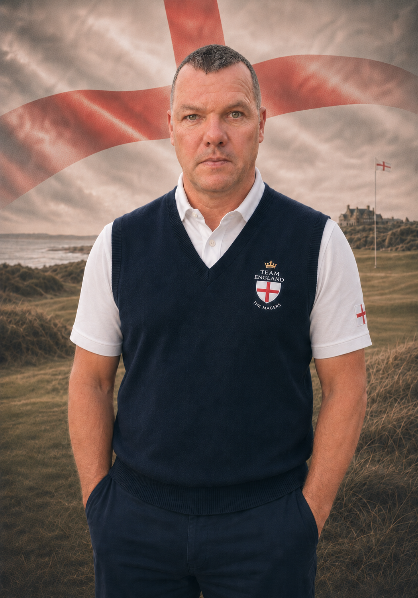

3 matches, 2 points and 1 Cup appearances.
Best-performing regular partnership in the available record: Cameron Turner — 1 points from 1 shared matches.
Entry handicap: 18. Current MF handicap: 17.

3 matches, 2 points and 1 Cup appearances.
Best-performing regular partnership in the available record: Cameron Turner — 1 points from 1 shared matches.
Entry handicap: 18. Current MF handicap: 17.
Entry 18; current 17.
2 points from matches recorded All Square, 1 & 0 or 2 & 0.
| Format | Matches | Points | Pts/match |
|---|---|---|---|
| Singles | 1 | 1 | 1.00 |
| BetterBalls | 2 | 1 | 0.50 |
| Partner | Matches | Points | Pts/match |
|---|---|---|---|
| Cameron Turner | 1 | 1 | 1.00 |
| Chris Kibbey | 1 | 0 | 0.00 |
| Opponent | Meetings | Points | Pts/match |
|---|---|---|---|
| Bengt Olof Stockhem | 1 | 1 | 1.00 |
| Björn Ekholm | 1 | 1 | 1.00 |
| Erik Malmsten | 1 | 0 | 0.00 |
| Erling Tysse | 1 | 0 | 0.00 |
| Edward Trick | 1 | 1 | 1.00 |
| Year | Format | Outcome | Points |
|---|---|---|---|
| 2025 | Singles | Shaun Davey(9) beat Edward Trick(0) 2 & 0 | 1 |
| 2025 | BetterBalls | Erik Malmsten(1)/Erling Tysse(8) beat Chris Kibbey(0)/Shaun Davey(1) 6 & 5 | 0 |
| 2025 | BetterBalls | Cameron Turner(4)/Shaun Davey(0) beat Bengt Olof Stockhem(1)/Björn Ekholm(6) 1 & 0 | 1 |